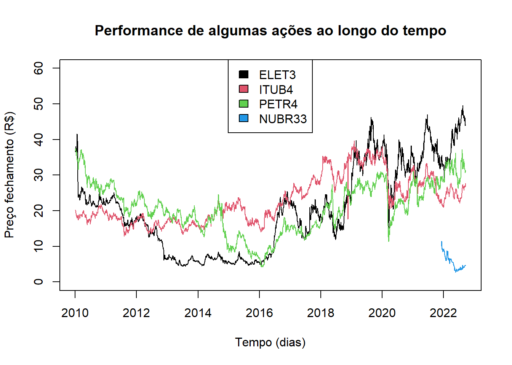
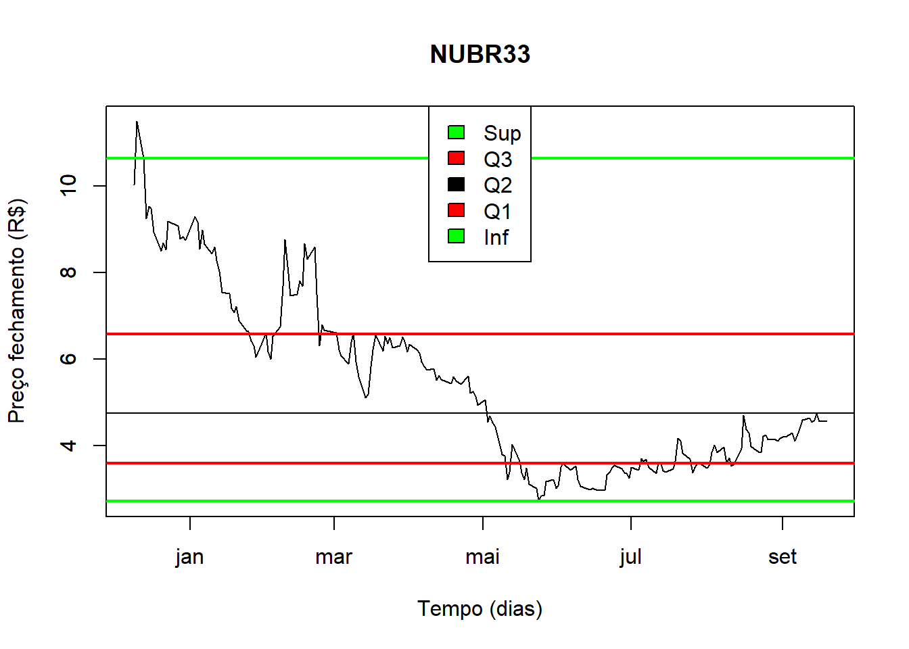

Cap. 1 Estatística descritiva
Utilizamos métodos de Estatística Descritiva para organizar, resumir e descrever os aspectos importantes de um conjunto de características observadas ou comparar tais características entre dois ou mais conjuntos
1.2 Pacotes
Pacotes necessários para executar este capítulo:
library(readxl)
library(tidyverse)## ── Attaching packages ─────────────────────────────────────── tidyverse 1.3.2 ──
## ✔ ggplot2 3.4.0 ✔ purrr 0.3.5
## ✔ tibble 3.1.8 ✔ dplyr 1.0.10
## ✔ tidyr 1.2.1 ✔ stringr 1.4.1
## ✔ readr 2.1.3 ✔ forcats 0.5.2
## ── Conflicts ────────────────────────────────────────── tidyverse_conflicts() ──
## ✖ dplyr::filter() masks stats::filter()
## ✖ dplyr::lag() masks stats::lag()library(readxl)
library(tibble)
library(knitr)
library(kableExtra)##
## Attaching package: 'kableExtra'
##
## The following object is masked from 'package:dplyr':
##
## group_rowslibrary(shiny)
library(dplyr)1.3 Conjunto de dados
Este conjunto de dados de ações da bovespa foi criado pela professora Dra.Olga Satomi Yoshida para aula de Big Data no IPT.
1.4 Informações dos atributos
Enconta no forma de planilha excel - 03 B2 DADOS Time Series Preços Açoes Diario.xlsx, contém 10 séries com as ações:
- ELET3;
- ITUB4;
- ITSA4;
- PETR4;
- BBDC4;
- VALE3;
- BBAS3;
- LREN3;
todos para o período de 01/04/2010 à 19/09/2022 e
- NUBR33 período 12/09/2021 a 19/09/2022;
- MGLU3 perído 05/02/2011 a 19/09/2022.
Os atributos para cada série são a data e valor no fechamento do pregão.
series = read_excel("dados/03 B1 ESTATISTICAS DESC E REGRESSAO.xlsx",
sheet = 2,
n_max = 1)## New names:
## • `44898` -> `44898...2`
## • `44898` -> `44898...4`
## • `44898` -> `44898...6`
## • `44898` -> `44898...8`
## • `44898` -> `44898...10`
## • `44898` -> `44898...12`
## • `44898` -> `44898...14`
## • `44898` -> `44898...16`
## • `44898` -> `44898...18`
## • `44898` -> `44898...20`nomes = names(series)[seq(1, 20, 2)]
series = read_excel("dados/03 B1 ESTATISTICAS DESC E REGRESSAO.xlsx",
sheet = 2,
skip = 1)## New names:
## • `Date` -> `Date...1`
## • `Close` -> `Close...2`
## • `Date` -> `Date...3`
## • `Close` -> `Close...4`
## • `Date` -> `Date...5`
## • `Close` -> `Close...6`
## • `Date` -> `Date...7`
## • `Close` -> `Close...8`
## • `Date` -> `Date...9`
## • `Close` -> `Close...10`
## • `Date` -> `Date...11`
## • `Close` -> `Close...12`
## • `Date` -> `Date...13`
## • `Close` -> `Close...14`
## • `Date` -> `Date...15`
## • `Close` -> `Close...16`
## • `Date` -> `Date...17`
## • `Close` -> `Close...18`
## • `Date` -> `Date...19`
## • `Close` -> `Close...20`names(series)[seq(1, 20, 2)] = paste0("DATA_", nomes)
names(series)[seq(2, 20, 2)] = nomes
## Transforma o tipo das colunas de Datetime para Date.
for (i in seq(1, 20, 2)) {
series[[i]] = as.Date(series[[i]])
}
kable(head(series, 10)) %>%
kable_styling(latex_options = "striped")| DATA_ELET3 | ELET3 | DATA_ITUB4 | ITUB4 | DATA_ITSA4 | ITSA4 | DATA_PETR4 | PETR4 | DATA_NUBR33 | NUBR33 | DATA_MGLU3 | MGLU3 | DATA_BBDC4 | BBDC4 | DATA_VALE3 | VALE3 | DATA_BBAS3 | BBAS3 | DATA_LREN3 | LREN3 |
|---|---|---|---|---|---|---|---|---|---|---|---|---|---|---|---|---|---|---|---|
| 2010-01-04 | 37.37 | 2010-01-04 | 20.10 | 2010-01-04 | 8.05 | 2010-01-04 | 37.32 | 2021-12-09 | 10.04 | 2011-05-02 | 0.51 | 2010-01-04 | 12.16 | 2010-01-04 | 51.49 | 2010-01-04 | 29.90 | 2010-01-04 | 6.05 |
| 2010-01-05 | 37.07 | 2010-01-05 | 20.23 | 2010-01-05 | 8.02 | 2010-01-05 | 37.00 | 2021-12-10 | 11.50 | 2011-05-03 | 0.51 | 2010-01-05 | 12.10 | 2010-01-05 | 51.97 | 2010-01-05 | 29.60 | 2010-01-05 | 5.83 |
| 2010-01-06 | 36.59 | 2010-01-06 | 20.05 | 2010-01-06 | 7.92 | 2010-01-06 | 37.50 | 2021-12-13 | 10.65 | 2011-05-04 | 0.52 | 2010-01-06 | 12.00 | 2010-01-06 | 53.07 | 2010-01-06 | 29.64 | 2010-01-06 | 5.72 |
| 2010-01-07 | 37.44 | 2010-01-07 | 19.84 | 2010-01-07 | 7.88 | 2010-01-07 | 37.15 | 2021-12-14 | 9.25 | 2011-05-05 | 0.51 | 2010-01-07 | 11.97 | 2010-01-07 | 53.29 | 2010-01-07 | 29.65 | 2010-01-07 | 5.66 |
| 2010-01-08 | 38.07 | 2010-01-08 | 19.54 | 2010-01-08 | 7.82 | 2010-01-08 | 36.95 | 2021-12-15 | 9.54 | 2011-05-06 | 0.51 | 2010-01-08 | 11.95 | 2010-01-08 | 53.81 | 2010-01-08 | 29.82 | 2010-01-08 | 5.69 |
| 2010-01-11 | 37.48 | 2010-01-11 | 19.37 | 2010-01-11 | 7.79 | 2010-01-11 | 36.83 | 2021-12-16 | 9.49 | 2011-05-10 | 0.50 | 2010-01-11 | 11.96 | 2010-01-11 | 53.65 | 2010-01-11 | 30.05 | 2010-01-11 | 5.80 |
| 2010-01-12 | 37.13 | 2010-01-12 | 19.19 | 2010-01-12 | 7.79 | 2010-01-12 | 36.36 | 2021-12-17 | 8.95 | 2011-05-11 | 0.51 | 2010-01-12 | 12.00 | 2010-01-12 | 53.50 | 2010-01-12 | 29.80 | 2010-01-12 | 5.94 |
| 2010-01-13 | 37.49 | 2010-01-13 | 19.25 | 2010-01-13 | 7.77 | 2010-01-13 | 36.30 | 2021-12-20 | 8.50 | 2011-05-12 | 0.51 | 2010-01-13 | 12.06 | 2010-01-13 | 54.16 | 2010-01-13 | 30.18 | 2010-01-13 | 6.00 |
| 2010-01-14 | 36.89 | 2010-01-14 | 18.99 | 2010-01-14 | 7.66 | 2010-01-14 | 35.67 | 2021-12-21 | 8.70 | 2011-05-13 | 0.51 | 2010-01-14 | 11.81 | 2010-01-14 | 54.15 | 2010-01-14 | 29.75 | 2010-01-14 | 5.87 |
| 2010-01-15 | 35.59 | 2010-01-15 | 18.67 | 2010-01-15 | 7.47 | 2010-01-15 | 35.75 | 2021-12-22 | 8.54 | 2011-05-17 | 0.50 | 2010-01-15 | 11.64 | 2010-01-15 | 53.45 | 2010-01-15 | 29.25 | 2010-01-15 | 5.66 |
1.5 Análise descritiva de algumas ações
plot(x=series$DATA_ELET3, y= series$ELET3, type = "l", xlab = "Tempo (dias)", ylab = "Preço fechamento (R$)", main = "Performance de algumas ações ao longo do tempo", ylim = c(0, 60) )
lines(x=series$DATA_ITUB4, y= series$ITUB4, col = 2)
lines(x=series$DATA_PETR4, y= series$PETR4, col = 3)
lines(x=series$DATA_NUBR33, y= series$NUBR33, col = 4)
legend("top", legend = c("ELET3", "ITUB4", "PETR4", "NUBR33"), fill = c(1,2,3,4)) > NUBR33 tem uma série menor que as demais ações.
Parâmetros
stock_symbols = c("ELET3","ITUB4","ITSA4","PETR4","NUBR33","MGLU3","BBDC4","VALE3","BBAS3","LREN3")
stock_symbol = 5 # 1 a 10
dataInicial = NULL # as.Date("2022-01-01")
dataFinal = NULL # as.Date("2022-12-31")1.6 Avaliando NUBR33
symbol_series = series %>%
dplyr::select(matches(stock_symbols[stock_symbol]) )
names(symbol_series)[1] = "stock_date"
names(symbol_series)[2] = "stock_value"
if (is.null(dataInicial)) {
dataInicial = min(symbol_series$stock_date, na.rm = TRUE)
}
if (is.null(dataFinal)) {
dataFinal = max(symbol_series$stock_date, na.rm = TRUE)
}
subConjunto = filter(symbol_series, stock_date >= dataInicial & stock_date <= dataFinal)
Data = subConjunto$stock_date
Ser = subConjunto$stock_value
getmode <- function(v) {
uniqv <- unique(v)
uniqv[which.max(tabulate(match(v, uniqv)))]
}
cont = count(subConjunto)
menor = min(Ser)
maior = max(Ser)
p = quantile(Ser, c(.025, .10, .25, .50, .75, .90, .975))
media = mean(Ser, na.rm = T)
desvio = sd(Ser, na.rm = T)
mediana = median(Ser, na.rm = T)
moda = getmode(Ser)
ep = desvio / sqrt(cont)
periodo = dataFinal - dataInicialMedidas de posição:
- Contagem de resultados 195
- Menor valor: 2.72
- Percentil: 2.9885, 3.352, 3.6, 4.76, 6.585, 8.6, 9.3285
- Maior valor: 11.5
Medidas de tendência central:
- Moda: 3.6
- Mediana: 4.76
- Média dos resultados: 5.3922564
Medidas de dispersão dos dados individuais em relação a média:
- desvio padrão dos resultados em relação a média: 2.0007468
- coeficiente de variação = d.p. / média: 0.3710407
- c.v. % = (d.p. / média ) x 100 %: 37.1040734
Medidas de disperção da média:
- e.p. = d.p. da média = d.p. / Raiz(n): 0.1432765
- c.v.e.p. = e.p. / média: 0.0265708
- c.v.e.p.% = (e.p. / média) x 100 %: 2.6570779
Para NUBR33 o preço médio da ação, no período de 2021-12-09 a 2022-09-19 (período de 284 dias) é de 5.3922564 e o desvio padrão de 2.0007468.
plot(subConjunto, type = "l", xlab = "Tempo (dias)", ylab = "Preço fechamento (R$)", main=stock_symbols[stock_symbol])
caixa = boxplot(Ser, add = T)
limSup = caixa$stats[5,1]
Q3 = caixa$stats[4,1]
Q2 = caixa$stats[3,1]
Q1 = caixa$stats[2,1]
limInf = caixa$stats[1,1]
abline(h = Q2, col = "black")
abline(h = Q3, col = "red", lwd = 2)
abline(h = Q1, col = "red", lwd = 2)
abline(h = limSup, col = "green", lwd = 2)
abline(h = limInf, col = "green", lwd = 2)
legend("top", legend = c("Sup", "Q3", "Q2", "Q1", "Inf"), fill = c("green","red","black","red","green"))
Usando boxplot para obter limites e percentíls.